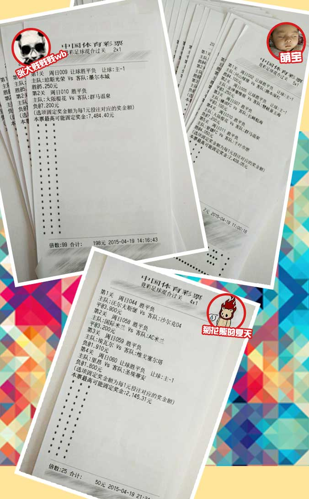

刚刚过去的这个周末，大V彩用户迎来了一个中奖高峰期。随着越来越多的高手加入，用户的中奖率不断提升；再加上大V彩独有的晒单跟单和V群交流功能，使得彩民和大神之间的沟通非常简便，中奖也变得越来越容易。
4月19日上午，用户“安安小萌宝”发起了一个日本乙级联赛的合买单。他选择了当天的八场日乙联赛，全部为单选投注，投注内容全部为2.75以上的高赔率，其中三个最高赔率，周日002冈山绿雉VS熊本深红（赛果3-0）的让球胜@4.10、周日010大阪樱花VS群马温泉（赛果1-2）的不让球负@7.20、周日011爱媛VS千叶市原（赛果1-0）的不让球胜@4.05均顺利打出，同时还命中周日004磐田喜悦VS东京绿茵（赛果2-0）让球胜@2.75、周日005金泽VS赞岐（赛果1-0）让球平@3.25、周日007横滨VS长崎（赛果2-2）不让球平@3.10等三场比赛，而他选择的串关方式则是2串1、3串1、5串1、8串1的综合串关方式，这张282元的神单擒获奖金13751.37元，46倍的高额回报由23名参与合买的用户分享，其中发起人“安安小萌宝”认购82元，中奖3798.70元。
4月19日晚，用户“菊花熊的夏天”发起了一个4串1方案，选择了德甲、意甲、西甲、法甲的四场比赛。其中周日044沃尔夫斯堡VS沙尔克04（赛果1-1）和周日058国际米兰VSAC米兰均单选不让球平，赔率都在3.20以上，而周日059埃瓦尔VS塞尔塔（赛果0-1）的不让球负@1.91和周日060里昂VS圣埃蒂安（赛果2-2）的让球负@1.80则是保守投注。该用户将这个2元的小单倍投25倍，以50元的投入换回了2145.31元的奖金，回报率接近43倍。另一名用户“想自由”跟单10倍，也获得了858元的奖金。
4月19日中午，用户“张大贱贱贱wb”发了一个单选的2串1，倍投311倍。他选择了澳超和日乙两个冷门联赛进行投注。其中周日009珀斯光荣VS墨尔本城（赛果3-1）选择了让球胜@5.25，周日010大阪樱花VS群马温泉（赛果1-2）选择了不让球负@7.20，都是超高赔的搏冷投注。而这两个冷门赛果的打出都是依靠比赛85分钟之后的惊险绝杀。最终这个方案擒获奖金23511.60元，回报率达到37.8倍。不得不佩服这名用户的实力，同时他的运气也的确值得羡慕。可惜的是，也许是由于赔率过高，让其他用户看起来感觉“不靠谱”，这个神单并没能吸引其他用户跟单。
这样的中奖神单在大V彩每天都会出现，大家在V群中畅聊的过程中，一个个高回报的方案也就慢慢浮现出来。如何在大量的晒单中挑出中奖的方案进行跟单，也变成了一个技术活儿。随着越来越多实力派选手的加盟，相信将来还会涌现出很多跟单中奖的高手。
